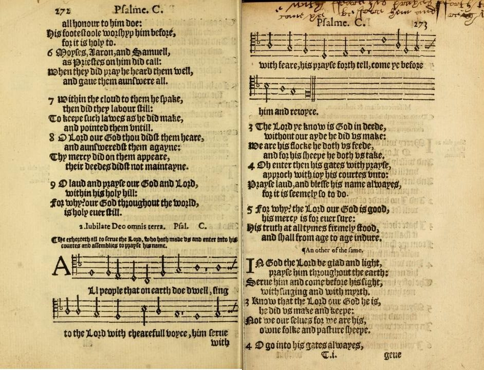

Psalm 100 — The Mister Translation

Psalm 100 as English churches sang it in the sixteenth century: William Kethe’s metrical version, printed here in a 1584 edition of the Sternhold and Hopkins psalter with the tune now called the Old Hundredth, written for the Genevan Psalter. Kethe has “him serue with feare” where the Hebrew has joy, and “without our ayde he did vs make”, the written reading of verse 3. The second version on the right page takes both readings at once: “Not we our selues for we are his”.
.jpg){kind=link}
Translator's Notes — verse by verse
A psalm for thanksgiving. “A psalm for thanksgiving”: mizmor le-todah. In the Hebrew the heading is the first half of verse 1, so the verse numbers here agree with the English ones; the Douay-Rheims, following the Latin, counts the heading as a verse of its own and runs verses 1 and 2 together. Mizmor le-todah stands in one verse of the Hebrew Bible: no other psalm is headed for the todah. Todah is thanks, and it is also the thanksgiving sacrifice, the peace-offering “for thanksgiving” of the law, brought “with cakes of leavened bread” (Leviticus 7:13, already on these pages). The heading can mean a song of thanks or a song for that offering. Jewish prayer took it the second way. The Shulchan Arukh (Orach Chayim 51:9) says the psalm is to be sung, and the gloss of Moses Isserles leaves it out on Sabbaths and festivals and on the days of Passover, because the thank offering, with its leavened loaves, was not brought on them. The Greek has psalmos eis exomologēsin, “a psalm for acknowledgment”. The ASV has “A Psalm of thanksgiving”; the NWT 1984 “A melody of thanksgiving”; the KJV and Douay “A psalm of praise”.
The shout. “Shout to Jehovah, all the earth”: hari’u, the verb of the teru’ah, the war-cry and the blast of the ram’s horn. It is the word Joshua gave at Jericho, “Shout! For Jehovah has given you the city” (Joshua 6:16, already on these pages); here it is the acclamation of a king, and the call goes to kol-ha-arets, all the earth, not to Israel alone. “Shout to Jehovah” stands in two verses of the Hebrew Bible, here and Psalm 98:4, both followed by “all the earth”. The Greek reads alalaxate, from the battle cry alala. The ASV has “Make a joyful noise unto Jehovah, all ye lands”; the NWT 1984 “Shout in triumph to Jehovah”; the NIV “Shout for joy”; the Geneva “Sing ye loud”; the Douay, from the Latin, “Sing joyfully to God, all the earth”.
Serve with joy. “Serve Jehovah with joy”: ivdu et-Yehovah be-simchah. The verb is avad, to work and to serve, the root of avodah, which is a slave’s labor and the worship of God in one word. The same verb and the same noun stand together in the curses of Deuteronomy, “because you did not serve Jehovah your God with joy and with gladness of heart” (Deuteronomy 28:47, already on these pages): what was there the reason for the curse is here an invitation to the whole earth. Psalm 2:11 has the same imperative with another noun, “Serve Jehovah with fear”. The best-known English paraphrase of this psalm, William Kethe’s “All people that on earth do dwell”, first printed in 1561 and sung to the tune called the Old Hundredth, has “Him serve with fear”: Psalm 2’s noun in Psalm 100’s line. The ASV has “Serve Jehovah with gladness”; the NWT 1984 “Serve Jehovah with rejoicing”; the NIV “Worship”; the TLB “Obey him gladly”.
Before his face. “Come before him with a ringing cry”: bo’u lefanav, “come before his face”, the language of entering the sanctuary, which verse 4 makes plain. Renanah is from ranan, to give a ringing cry, the high sound of joy. The Greek has en agalliasei, “with exultation”, and the Douay “with exceeding great joy”. The ASV has “Come before his presence with singing”; the NWT 1984 “Come in before him with a joyful cry”; the Geneva “come before him with joyfulness”.
Know that Jehovah, he is God. “Know that Jehovah, he is God”: de’u ki Yehovah hu Elohim, the creed Moses taught at Horeb, “so that you might know that Jehovah, he is God; there is no other besides him”, and “Know therefore today … that Jehovah, he is God” (Deuteronomy 4:35 and 4:39, already on these pages). There Israel was told; here all the earth of verse 1 is. With the article, Yehovah hu ha-Elohim, the sentence stands in five verses of the Hebrew Bible, among them the cry of the people on Carmel when the fire fell (1 Kings 18:39); the psalm has it without the article. The ASV has “Know ye that Jehovah, he is God”; the NWT 1984 “Know that Jehovah is God”.
“And not we” or “and his we are”. “It is he who made us”: hu asanu, the claim of the Song of Moses, “He made you, and he established you” (Deuteronomy 32:6, already on these pages). Then comes a place where the scribes kept two readings. The consonants written in the text are ולא, ve-lo’, “and not”, which gives “he made us, and not we ourselves”; the Masoretic reading tradition reads ולו, ve-lo, “and to him”, which gives “and we are his”. The two words sound alike and differ by one letter, the same pair as in Leviticus 11:21 (already on these pages), where the reading turns “not” into “it has”. This translation prints the read form, as at every such reading, and the read form runs straight on into what follows: “we are his: his people, and the flock of his pasture”. The written form says something else that is also true, that we did not make ourselves. The Greek translators read the written form, kai ouch hēmeis, “and not we”, and the Latin followed them, which is why “not we ourselves” stood in English Bibles for centuries: the Geneva has “he hath made us, and not we ourselves”; the KJV “it is he that hath made us, and not we ourselves”; the Douay “he made us, and not we ourselves”; the NWT 1984 “It is he that has made us, and not we ourselves”. Kethe’s hymn follows it too, “Without our aid he did us make”. The ASV reads “It is he that hath made us, and we are his”, and the NIV “It is he who made us, and we are his”; the 2013 revision of the NWT changed to “and we belong to him”, and the Spanish edition’s 2019 revision to «nosotros le pertenecemos». The TLB, “He made us—we are his people”, keeps neither.
The flock of his pasture. “His people, and the flock of his pasture”: tson mar’ito. Mar’it, a pasture or a grazing, is from ra’ah, to shepherd, the verb of “Jehovah is my shepherd” (Psalm 23:1, already on these pages; see ro’eh). “The flock of his (your, my) pasture” stands in five verses of the Hebrew Bible, among them Jeremiah’s “Woe to the shepherds who destroy and scatter the flock of my pasture!” (Jeremiah 23:1, already on these pages) and Ezekiel 34:31. Psalm 95:7 crosses the pair, “the people of his pasture, and the flock of his hand”. Tson is a flock of small livestock, sheep and goats together. The ASV and KJV have “the sheep of his pasture”; the NWT 1984 “the sheep of his pasturage”.
Gates and courts. “Enter his gates with thanksgiving, his courts with praise”: the todah of the heading comes back, and both of its senses fit, words of thanks and the thank offering carried in. The gates are she’arav and the courts chatserotav, the open courtyards around the sanctuary where the worshippers stood. The praise is tehillah, the noun whose plural, Tehillim, is the Hebrew name of the book of Psalms. The ASV has “Enter into his gates with thanksgiving, And into his courts with praise”; the NWT 1984 “Come into his gates with thanksgiving, Into his courtyards with praise”; the Geneva “Enter into his gates with praise, and into his courts with rejoicing”; the Douay, from the Greek hymnois, “into his courts with hymns”.
Give thanks, and bless. “Give thanks to him, bless his name”: hodu-lo, from yadah, the root of todah itself, so that the noun and its verb stand in one verse; and barekhu, the verb of “Bless Jehovah, O my soul” (Psalm 103:1, already on these pages). The ASV has “Give thanks unto him, and bless his name”; the KJV “be thankful unto him, and bless his name”; the NIV “give thanks to him and praise his name”.
Good, and steadfast love forever. “For Jehovah is good; his steadfast love is forever”: this is the refrain of the temple singers, “Give thanks to Jehovah, for he is good, for his steadfast love is forever”, which opens Psalms 106, 107 and 118, and whose second half ends every verse of Psalm 136; the singers were praising with “for he is good, for his steadfast love is forever” when the cloud filled Solomon’s temple (2 Chronicles 5:13; none of these translated here yet). “Jehovah is good” is also Psalm 34’s “Taste and see that Jehovah is good” (Psalm 34:9, already on these pages). Chesed is “steadfast love”, as in Psalm 103. The Greek has chrēstos, kind, and so the Douay says he “is sweet”. The ASV has “his lovingkindness endureth for ever”; the KJV “his mercy is everlasting”; the NWT 1984 “His loving-kindness is to time indefinite”; the NIV “his love endures forever”.
Faithfulness, generation after generation. “And his faithfulness to generation after generation”: emunah, from aman, the root of “amen”, is faithfulness, the steadiness that can be leaned on. Psalm 119 says the same of the same word, “Your faithfulness is from generation to generation” (Psalm 119:90, already on these pages). Dor va-dor, “generation and generation”, is Hebrew’s way of saying every one of them. The Greek has alētheia, truth, and the older English followed: the KJV has “his truth endureth to all generations” and the Douay “his truth to generation and generation”; the ASV “And his faithfulness unto all generations”; the NWT 1984 “And his faithfulness to generation after generation”.
Patterns worth carrying forward
Where this translation keeps the words exact and distinct: “thanksgiving” for todah in the heading and in verse 4, as in Leviticus 7:12; “Shout” for hari’u, as at Jericho in Joshua 6:16; “with joy” for be-simchah, as in Deuteronomy 28:47; “Jehovah, he is God”, as in Deuteronomy 4:35 and 39; the read form “and we are his”, with the written form in the note, as at Leviticus 11:21; “the flock of his pasture”, as in Jeremiah 23:1; “steadfast love” for chesed, as in Psalm 103; and “faithfulness” for emunah, as in Psalm 119:90.
Echoes paid. The thank offering and its leavened loaves (Leviticus 7); the shout at Jericho (Joshua 6); serving with joy, which Deuteronomy 28 found missing; the creed of Horeb (Deuteronomy 4); “He made you” from the Song of Moses (Deuteronomy 32); the written “not” and the read “his” of Leviticus 11:21; the shepherd of Psalm 23 and the flock of Jeremiah 23; “bless” from Psalm 103; “Jehovah is good” from Psalm 34; and faithfulness from generation to generation in Psalm 119.
Echoes planted. “Shout to Jehovah, all the earth” again in Psalm 98:4; “Serve Jehovah with fear” in Psalm 2:11; “Jehovah, he is God” on Carmel (1 Kings 18:39); “the people of his pasture, and the flock of his hand” (Psalm 95:7) and “the flock of my pasture” in Ezekiel 34:31; and the refrain “for his steadfast love is forever” in Psalms 106, 107, 118 and 136 and at the dedication of the temple (2 Chronicles 5:13). None is translated here yet.
⚠ A note on order: the Psalms stand on these pages at 1, 23, 27, 34, 37, 46, 51, 91, 100, 103, 119, 121 and 139, chosen by how often they are read rather than in sequence. The sequential thread is unchanged: next in sequence is Psalm 2.